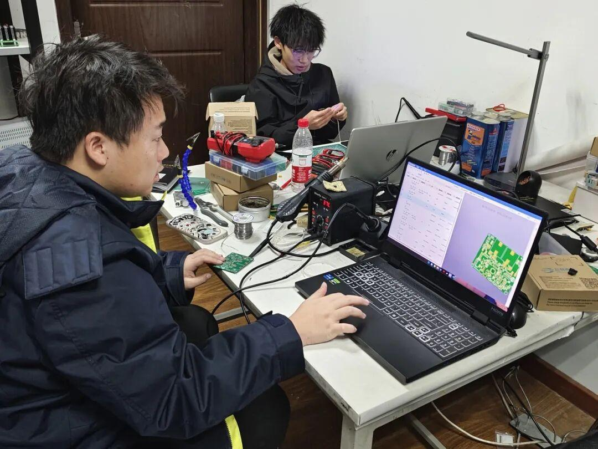
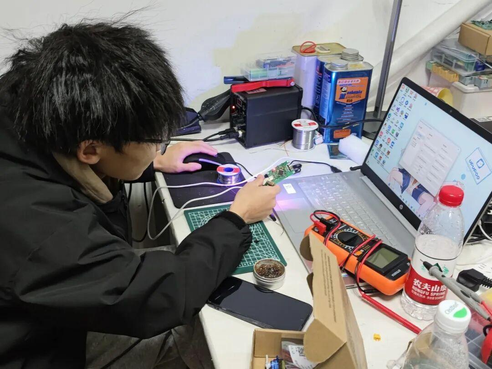
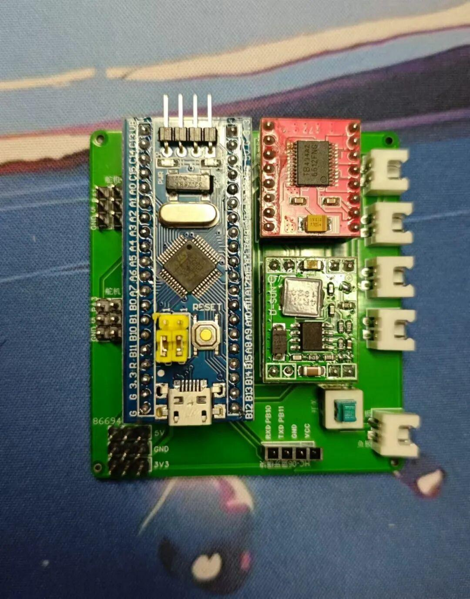
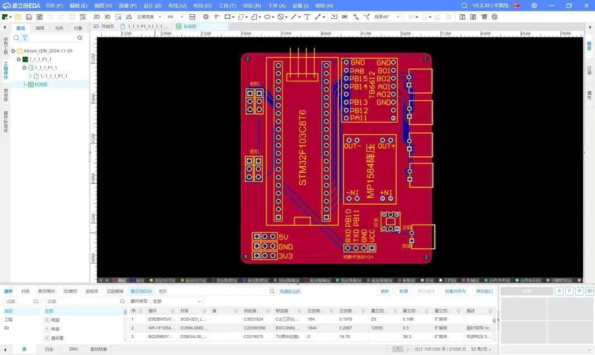
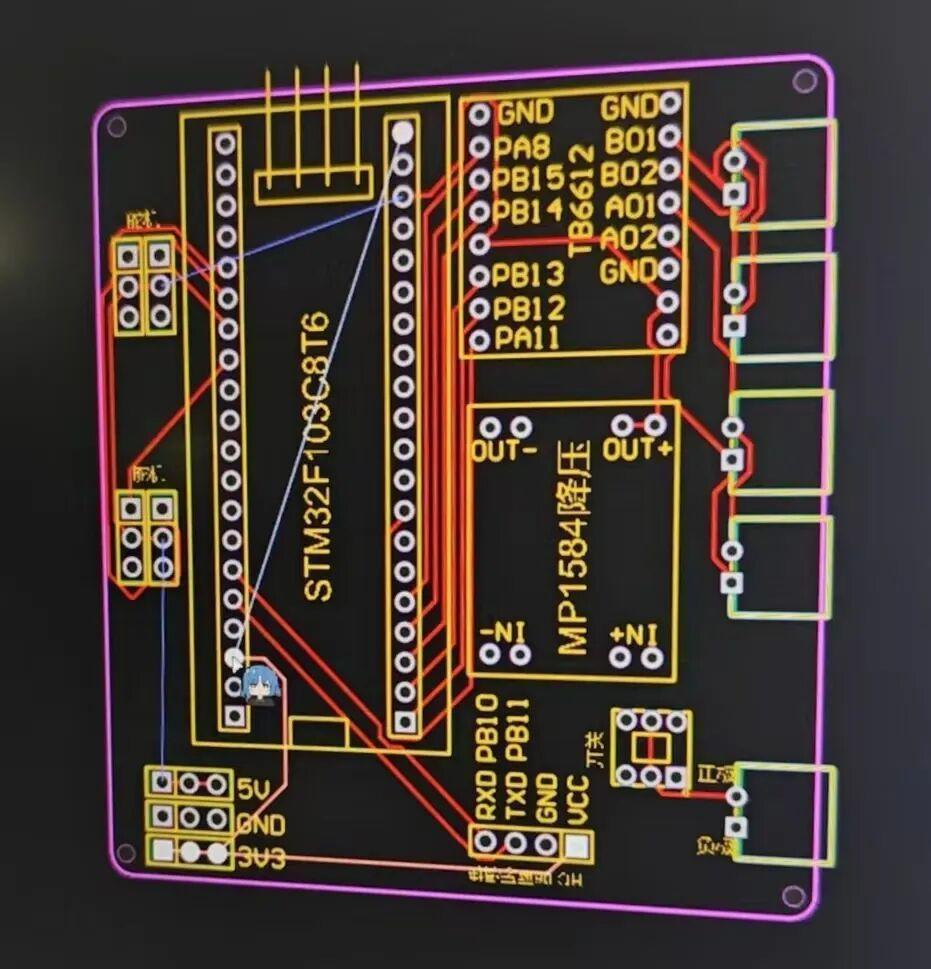

硬件组|衔接各组的桥梁
嵌入式硬件组
Ambition战队组别介绍

硬件组是衔接各组的桥梁，在官方规则允许的范围内，设计电气单元并对整车的电气部分进行搭建，既需要满足机械部分的设计限制与目标，又要为视觉部分与电控部分提供所需的硬件支持。
硬件组决定了机器人的稳定性及爆发力。他们精心设计制作电路板和超级电容模块，为机器⼈提供更稳定而强劲的电力供应，为电控视觉的发挥提供坚实基础。
由于工程的需要，硬件组与电控组密不可分。他们共同搭建电子系统保障机器人发挥最佳性能。

绘制分电板，对遥控器、电池等设备进行检修；低成本自制利于调试或高性能的模块如：陀螺仪、无线下载器等；以及设备的维护工作。
制作部分能量机关，制作超级电容模块（电容组+控制板）以及今年新增的无线充电等(这些部分结构较多学习较为困难需要投入时间研究)。
电子知识
掌握一些基本的电路分析能力，至少了解二极管、三极管、mos管这些基本元器件的工作原理和特性，做到看到原理图心里不慌张。之后再学着按照芯片手册去画一些外围的电路图，去应用这些芯片，一步步的对电流、电压和一些基本的元器件有更深的认识。
实践操作能力

学习如何使用焊台、如何焊线、如何焊接拆除PCB板上的元器件；学习如何使用基本的测量仪器。这部分的内容比较繁琐，每个小知识点所需要的学习时间不长，非常需要日常的积累。
单片机知识

俗话说的好，软硬件不分家。硬件组少不了与电控组的沟通，所以哪怕是硬件组的成员，也需要掌握基本的代码编写能力，熟悉单片机的基本操作。
硬件的学习应该为“边抄边学”，所谓的边抄边学并不是简单的Ctrl C/Ctrl V。学习硬件应该寻找你所需要的开源或与之类似的东西去研究它的原理，再进行绘制学习。硬件的基础有模电，数电，学好这些专业知识更能让你对硬件的学习有所提高。
硬件考察组学习展示



END
排版|二阳阳
文案|二阳阳
图片|Ambition战队运营组
审核|青唐三月